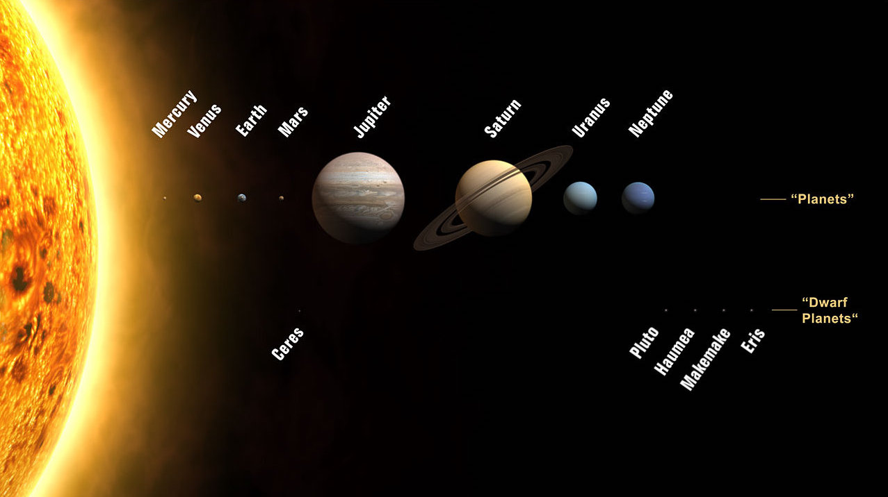
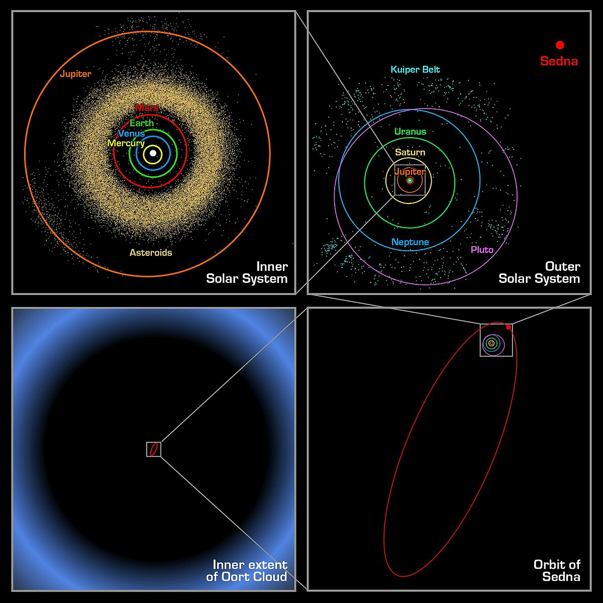

Astronomers now recognize eight planets:
Five dwarf planets:
More than 150 moons, and many, many asteroids and other small objects (Figure below). These objects move in regular and predictable paths around the Sun.
The figure below shows the relative sizes of the orbits of the planets, asteroid belt, and Kuiper belt. In general, the farther away from the Sun, the greater the distance from one planet’s orbit to the next. The orbits of the planets are not circular but slightly elliptical, with the Sun located at one of the foci. Other bodies that orbit the Sun, such as comets and Kuiper Belt objects, have more highly elliptical orbits.
While studying the solar system, Johannes Kepler discovered the relationship between the time it takes a planet to make one complete orbit around the Sun, its "orbital period," and the distance from the Sun to the planet. If the orbital period of a planet is known, then it is possible to determine the planet’s distance from the Sun. This is how astronomers without modern telescopes could determine the distances to other planets within the solar system.
The further a planet is from the Sun, the longer its orbital period. For example, Jupiter is the fifth planet from the Sun. Jupiter’s orbital period is 11.86 times longer than Earth’s, meaning that one year on Jupiter is equal to 11.86 years on Earth.
How old are you on Earth? How old would you be if you lived on Jupiter? How many days is it until your birthday on Earth? How many days until your birthday if you lived on Saturn?
Mercury does not actually orbit backwards. From our position on Earth, we perceive it to be moving backwards. As we have just learned above, the further a planet is from the Sun, the longer its orbital period. This is also means the closer it is, the faster the orbital period will be.
Mercury's orbital period is way faster than ours because it is the closest planet to the sun. About three or four times a year, Mercury speeds past Earth, and that is when we experience a Mercury retrograde period. This period lasts for about three-and-a-half weeks.